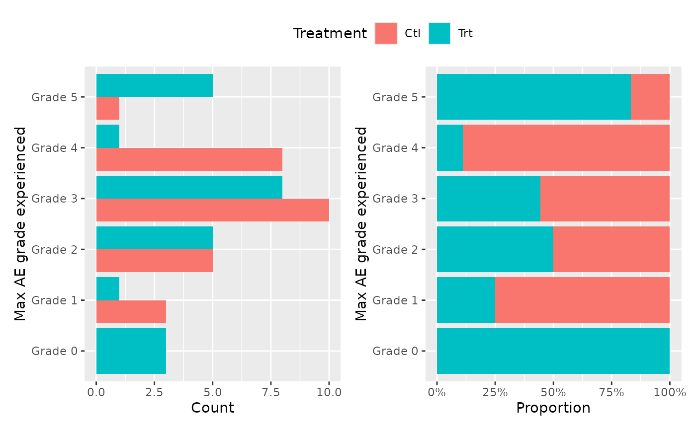
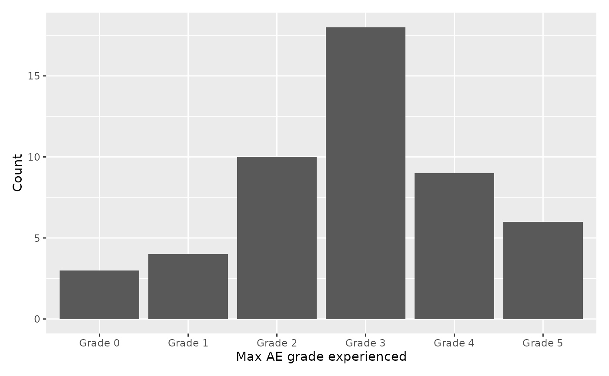
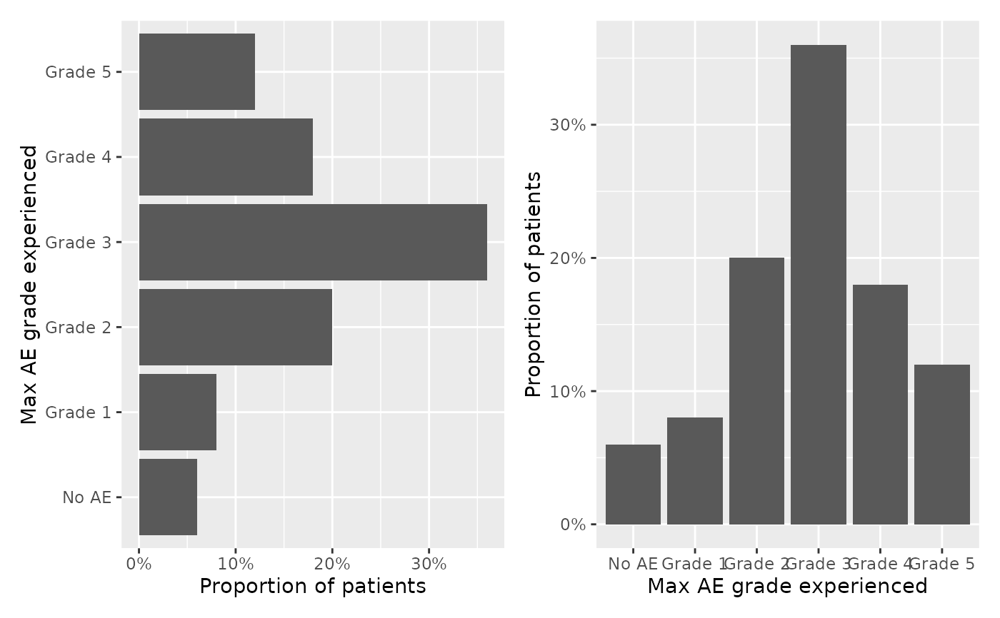

Produces a graphic representation of AE, counting the maximum grade each patient experienced, colored by treatment arm. Returns up to 3 representations if arm!=NULL.
Usage
ae_plot_grade_max(
df_ae,
...,
df_enrol,
type = c("stack", "dodge", "fill"),
proportion = TRUE,
drop_levels = FALSE,
arm = "ARM",
subjid = "SUBJID",
soc = "AESOC",
grade = "AEGR"
)Arguments
- df_ae
adverse event dataset, one row per AE, containing subjid, soc, and grade
- ...
unused
- df_enrol
enrollment dataset, one row per patient, containing subjid (and arm if needed). All patients should be in this dataset.
- type
the plots to be included. One of
c("stack", "dodge", "fill").- drop_levels
whether to drop unused grade levels.
- arm
name of the treatment column in
df_enrol. Case-insensitive. Can be set toNULLto not group.- subjid
name of the patient ID in both
df_aeanddf_enrol. Case-insensitive.- soc
name of the SOC column in
df_ae. Case-insensitive. Grade will be considered 0 if missing(e.g. if patient if absent fromdf_ae).- grade
name of the AE grade column in
df_ae. Case-insensitive.
See also
ae_table_grade_max(), ae_table_grade_n(), ae_table_soc(), ae_plot_grade_max(), ae_plot_grade_n()
Examples
tm = edc_example_ae()
ae_plot_grade_max(df_ae=tm$ae, df_enrol=tm$enrolres)
#> Warning: Returning more (or less) than 1 row per `summarise()` group was deprecated in
#> dplyr 1.1.0.
#> ℹ Please use `reframe()` instead.
#> ℹ When switching from `summarise()` to `reframe()`, remember that `reframe()`
#> always returns an ungrouped data frame and adjust accordingly.
#> ℹ The deprecated feature was likely used in the EDCimport package.
#> Please report the issue at <https://github.com/DanChaltiel/EDCimport/issues>.

ae_plot_grade_max(df_ae=tm$ae, df_enrol=tm$enrolres, type=c("dodge", "fill"), proportion=FALSE)

ae_plot_grade_max(df_ae=tm$ae, df_enrol=tm$enrolres, arm=NULL) + ggplot2::coord_flip()

#you can use modificators from the patchwork package, like "&"
if (FALSE) { # \dontrun{
library(patchwork)
ae_plot_grade_max(df_ae=tm$ae, df_enrol=tm$enrolres) & labs(fill="Group")
} # }